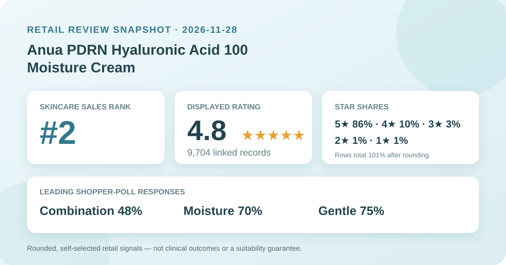
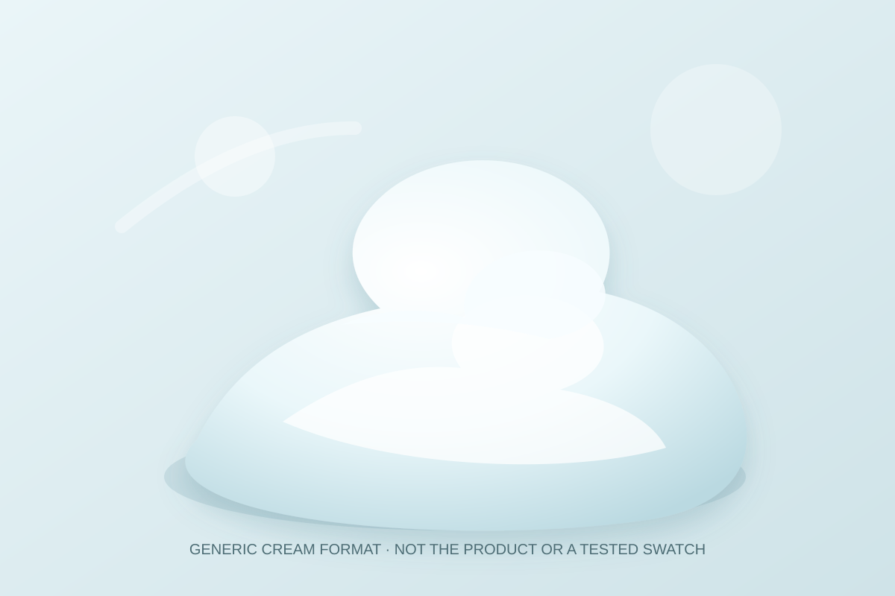

Data captured November 28, 2026. Olive Young Korea displayed “아누아 피디알엔 히알루론산 100 수분 크림 60mL 2입 기획.” This article uses “Anua PDRN Hyaluronic Acid 100 Moisture Cream” as a readable English label. It analyzes the live ranking, product identity, aggregate rating, displayed star shares, shopper polls, and anonymous retailer-generated themes. It does not copy or translate individual reviews, names, profiles, or photographs, and it makes no claim of firsthand use.

The short version: Anua PDRN Hyaluronic Acid 100 Moisture Cream appeared at number 2 in the captured skincare sales ranking. The ranking, product, and review-statistics titles agreed, while the product header and official review view both showed 4.8 out of 5 from 9,704 records. Five-star selections were 86% of the displayed distribution. Combination skin narrowly led the skin-type poll at 48%, moisture led the concern panel at 70%, and gentle led the irritation panel at 75%. These are retail feedback signals, not proof of hydration, barrier change, PDRN or hyaluronic-acid performance, clinical effect, or personal suitability.
The official display showed 4.8 stars from 9,704 linked review records. A base approaching ten thousand records is more mature than a newly launched listing with only a few dozen responses. It reduces the chance that one new rating will move the displayed average dramatically, but it does not remove selection bias or turn a storefront score into a controlled outcome.
The defensible conclusion is limited: the linked retail feedback was strongly favorable at capture time. The interface did not expose a verified-buyer census, raw star counts, application schedules, routine context, follow-up duration, or a comparison group. A review may reflect the cream, the two-unit promotion, tube design, shipping, price, brand familiarity, or the buyer's prior expectations.
The listing showed a reference price of ₩64,000 and a promotional price beginning at ₩20,650 for a 60 mL two-unit plan. Those commercial details are useful context because value can influence satisfaction, but they are temporary. They should not be used to infer formula quality or performance.
The detailed review statistics showed 86% five-star, 10% four-star, 3% three-star, 1% two-star, and 1% one-star. The displayed rows sum to 101% because each share is rounded. That rounding mismatch is reported rather than corrected or converted into estimated raw counts.
The distribution is consistent with a high rounded average, but it cannot explain why people chose each star level. It also cannot separate long-term wear from first impressions or identify whether a rating followed a discount, gift, or other promotion. The one- and two-star rows are small, not nonexistent.
The skin-type panel displayed 48% combination, 45% dry, and 7% oily. The rows total 100%. The narrow three-point gap means the captured response pool was not dominated by only one of the two leading labels.
This does not mean the cream worked for 48% of combination-skin shoppers or 45% of dry-skin shoppers. It describes representation among respondents to a separate poll. The retailer did not show the poll denominator, outcomes by subgroup, climate, season, amount applied, or the rest of each routine. The 7% oily share provides relatively little basis for oily-skin generalization.
The concern panel showed 70% moisture, 25% soothing, and 5% wrinkle or brightening. These rows total 100%. Moisture was clearly the leading storefront label, but the percentage is not a corneometer reading, transepidermal-water-loss measurement, barrier study, or amount of hydration gained.
The 70% figure does not mean hydration increased by 70%, that 70% of all buyers experienced a defined benefit, or that the formula outperformed another cream. Without a baseline, comparator, standardized application, disclosed denominator, and defined endpoint, the poll supports only a description of what respondents selected.
The irritation panel displayed 75% gentle, 24% ordinary, and 1% felt irritation. The rows total 100%. The leading response is favorable, while the smaller rows are a useful reminder that the display was not unanimous.
A retailer poll cannot guarantee tolerance or rule out stinging, allergy, breakouts, sensitivity, or routine interactions. It does not show whether respondents patch-tested, used the same amount, or combined the cream with retinoids, exfoliants, acne treatments, sunscreen, or makeup. A prospective buyer with a known condition or prior reaction should treat the current package and qualified advice as more relevant than an aggregate label.
The retailer's automated summary labeled 91% of an undisclosed recent-review subset as positive. It grouped broad anonymous themes around moisture and relief from a tight or dry feeling, makeup adhesion after application, and the convenience or hygiene of a pointed tube opening. These are paraphrased aggregate topics; no individual review text, identity, image, or story is reproduced.
The subset size, sampling window, classification method, error rate, and treatment of mixed comments were not disclosed. “Positive” is therefore a platform label rather than an independently audited sentiment score. Mentions of moisture or makeup fit remain subjective impressions, not measured hydration, barrier recovery, or a guarantee that the cream will layer well in every routine.

The retailer identifies the item as a cream. In general skincare language, a cream is a leave-on emulsion often used after lighter steps, but that category alone does not define thickness, spread, slip, tack, absorption speed, finish, scent, occlusiveness, or behavior under sunscreen and makeup.
I did not open, dispense, spread, layer, or wear this product. The local visual uses abstract folds and a neutral dollop only to communicate a generic cream format. It does not reproduce the actual product, package, color, or swatch and should not be read as sensory evidence.
The English label follows the Korean listing's PDRN, hyaluronic acid, “100,” and moisture wording. Those words identify the product family and marketing context. They do not independently establish the source, identity, purity, concentration, molecular-weight profile, stability, delivery, penetration, or clinical effect of any ingredient.
This analysis did not reconcile a complete ingredient list across markets or infer a percentage from the name. The number “100” is treated as naming, not a verified dose. Readers who need ingredient, allergen, fragrance, regional-formula, pregnancy, or treatment-compatibility information should consult the current package and an appropriate professional for the exact item they receive.
Rank 2 describes one capture of Olive Young Korea's skincare sales list. It is not a clinical ranking, a universal popularity measure, or proof that this is the second-best cream. Advertising, inventory, category placement, seasonality, celebrity promotion, bundle value, and short-term demand can move a listing quickly.
The captured page described a 60 mL two-unit plan and displayed a large discount from the reference price. Before buying, verify the current seller, formula, volume, bundle contents, stock, expiry information, directions, return terms, delivery estimate, and checkout price. Promotional copy and review aggregates can change independently.
Anua PDRN Hyaluronic Acid 100 Moisture Cream was the highest-ranked valid unpublished candidate on November 28, 2026 after the already-covered rank-one Anua serum was skipped. The listing passed the identity and consistency checks: its ranking, product, and review-statistics titles agreed, and both review surfaces displayed 4.8 stars from 9,704 records.
The most useful signals are the large linked feedback base, 86% five-star row, balanced combination-and-dry representation, moisture-leading concern panel, and favorable but non-unanimous irritation panel. The most important limits are equally clear: retail aggregates cannot prove hydration, barrier change, ingredient performance, clinical benefit, or individual fit.
The product header and official detailed review view both displayed 4.8 out of 5 from 9,704 linked review records. The displayed star shares were 86%, 10%, 3%, 1%, and 1% from five to one stars.
Combination skin led at 48%, followed closely by dry skin at 45% and oily skin at 7%. Those shares describe self-selected poll representation and do not prove suitability.
No. It is a rounded shopper-poll response, not an instrumental measurement, controlled comparison, or clinical endpoint.
No. The same panel displayed 24% ordinary and 1% felt irritation, and an aggregate cannot predict one person's response.
No. This article analyzes retailer-displayed aggregate data only. The local illustration is brand-neutral vector artwork, not a product photograph or tested swatch.
Source: Olive Young Korea product page, captured November 28, 2026. Product title, ranking, price, availability, rating, review count, star rows, poll values, and automated summary can change.
Published by The K-Beauty Data Desk. The source does not independently verify every buyer's identity, and this page is an editorial analysis of retailer-displayed aggregates—not medical advice or a substitute for the current product label.
← All reviews · Review-volume rankings · Skin-poll explorer · Methodology